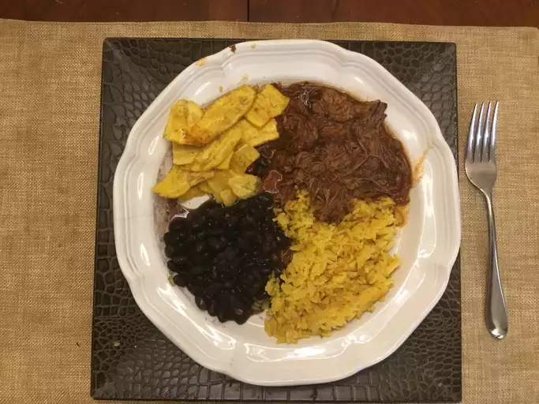

Lasagna

Description
This is nice food
Ingredients
- 1 tablespoon vegetable oil
- 2 pounds beef flank steak
- 1 cup beef broth
- Heat vegetable oil in a large skillet over medium-high heat. Add flank steak and cook until browned, about 4 minutes per side.
- Transfer steak to a slow cooker; pour in beef broth and tomato sauce. Add tomato paste, bell pepper, onion, garlic, cumin, cilantro, olive oil, and vinegar; stir until well blended.
- Cover and cook on Low for up to 10 hours, or on High for 4 hours.